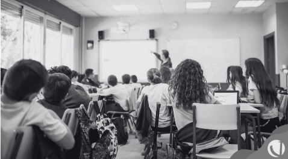

Introdução e Jusificativa
Problema de Pesquisa
Objetivos
Hipóteses
Resultados Esperados
PT
|
EN
ODS 10
Promovendo a Equidade Nacional: A Implementação do ODS 10 no Brasil
Introdução e Jusificativa
Objetivo do ODS 10: Diminuir desigualdades econômicas, sociais e políticas, garantindo igualdade de oportunidades.
139,2 mil escolas públicas com questões estruturais (Censo Escolar/Inep, 2019).
38,7 milhões de estudantes (81% das matrículas na Educação Básica).
Grande desigualdade de renda (World Inequality Lab, 2021).
Urgência de Ação: Necessidade de políticas públicas para promover a equidade no acesso à educação e oportunidades.
Problema de Pesquisa
Como a desigualdade de renda afeta o acesso à educação de qualidade?
Objetivos
Desenvolver um aplicativo de tutoria
Facilitar a colaboração entre alunos de diferentes níveis socioeconômicos
Alunos de maior renda apoiarão academicamente os de menor renda.
Hipóteses
Desenvolver um aplicativo de tutoria
Facilitar a colaboração entre alunos de diferentes níveis socioeconômicos
Alunos de maior renda apoiarão academicamente os de menor renda.

Resultados Esperados
Redução das disparidades educacionais: Aumento no desempenho acadêmico de alunos de baixa renda.
Solidariedade entre alunos: Fomento de uma cultura de apoio mútuo.
Maior conscientização sobre desigualdades sociais: Alunos de alta renda mais engajados em ações sociais.
Desenvolvimento de uma comunidade escolar inclusiva: Fortalecimento da equidade no ambiente educacional.
Melhoria na retenção escolar: Aumento na taxa de permanência dos alunos de baixa renda.
Desenvolvimento de habilidades socioemocionais: Fortalecimento das competências sociais e emocionais dos alunos.
Mais informações
Para melhor leitura, acesse
aqui